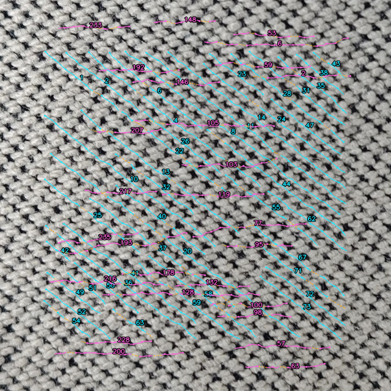
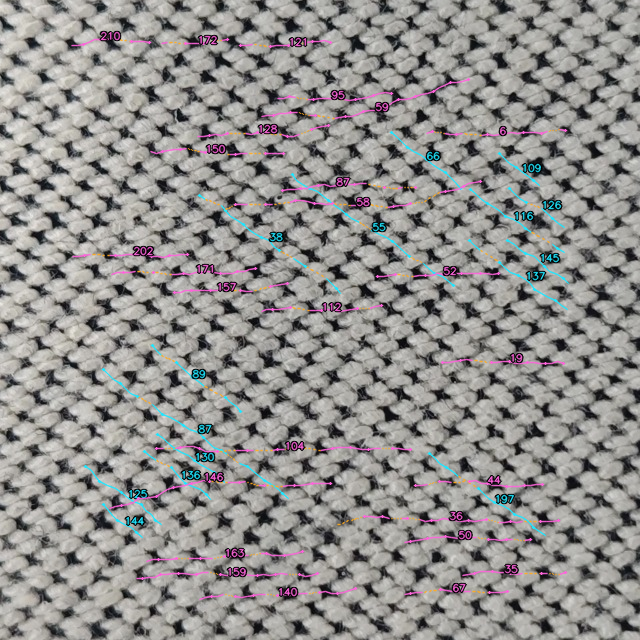
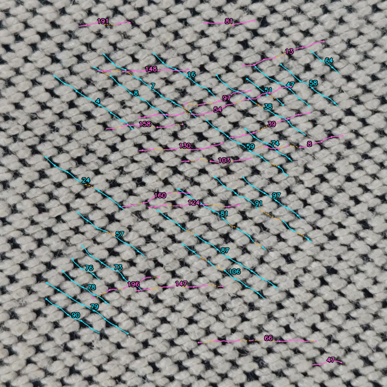
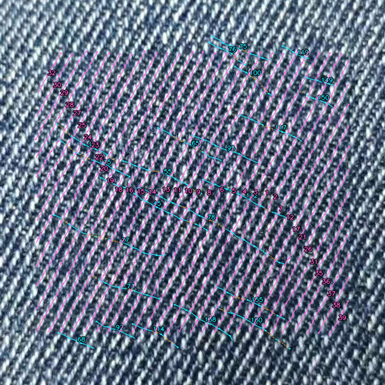
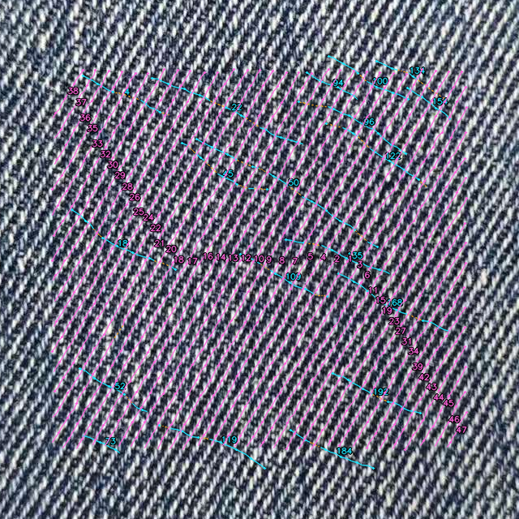
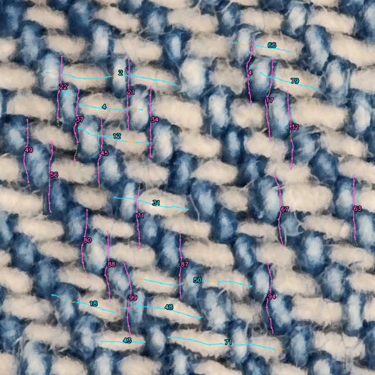
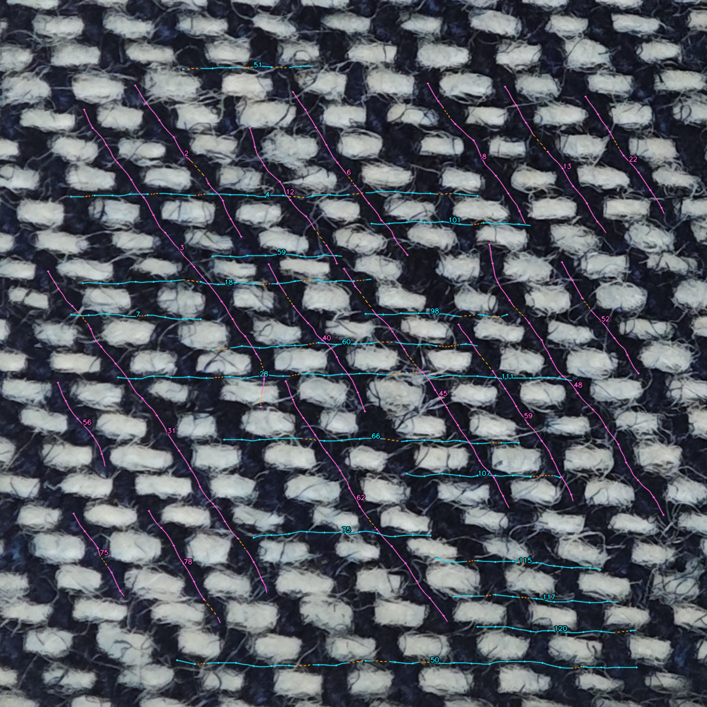

此前手机照片 6 · U20261013_06
无双方向；候选片段 0；Gate 3 LOW_CONFIDENCE

8 个案例，9 张输入照片，完整执行 8/8。质量未通过的案例完整保留。候选片段不是物理纱线根数；真实识别准确率未评估。
54.00° / 176.00°；候选片段 42 / 27；Gate 3 LOW_CONFIDENCE

56.00° / 173.00°；候选片段 15 / 26；Gate 3 LOW_CONFIDENCE

53.00° / 171.00°；候选片段 23 / 17；Gate 3 LOW_CONFIDENCE

26.00° / 116.00°；候选片段 23 / 37；Gate 3 LOW_CONFIDENCE

27.00° / 119.00°；候选片段 19 / 45；Gate 3 LOW_CONFIDENCE

无双方向；候选片段 0；Gate 3 LOW_CONFIDENCE
15.00° / 92.00°；候选片段 11 / 18；Gate 3 LOW_CONFIDENCE

0.00° / 78.00°；候选片段 17 / 17；Gate 3 LOW_CONFIDENCE
